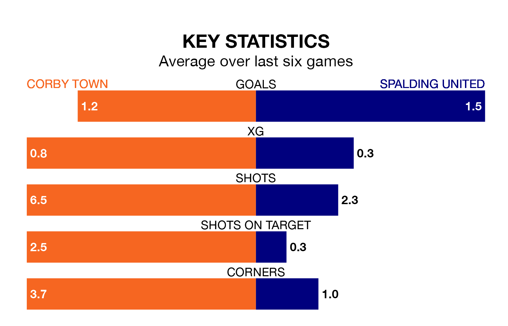

Spalding United travel to Steel Park for Saturday's match against Corby Town looking to bounce back from defeat last time out in Northern Premier League Division One Midlands.
Spalding, who sit top of the league after 24 games, fell to a 5-0 home defeat to Anstey Nomads on January 13.
They face a Corby side who secured a draw in their last match, a 0-0 tie with Quorn, and who sit 12th in the table.
With 50 goals in 24 games so far this season, Spalding are the league's third-highest scorers with 2.1 goals per game. And they are conceding fewer than average, letting in 24 goals at a rate of 1.0 per game.
Corby are also above average scorers, with 2.0 goals per game, compared to a league average of 1.5. They have conceded 1.4 goals per game.
Town are in mixed form in Northern Premier League Division One Midlands, with one win and five draws from their last six games.
With five wins and one loss over that period, United's form is much better – they have taken 15 points from 18, compared to the home side's eight.
In the last five years, Corby and Spalding have played each other on five occasions. They won two each, and they drew once.
On average, Corby scored 1.2 goals and Spalding 1.2 in those matches.
Their last meeting was on November 7, when Corby won 2-1 away.
Updated: 08:51 (UTC), 25/01/24